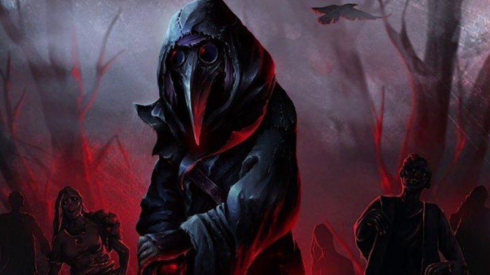

5.Какая мобильная оперативная группа встречалась в игре SCP: Contaiment Breach?
1)Эпсилон-11 «Девятихвостая Лиса»
2)МОГ Бета-4 ("Отверженцы")
3)МОГ Гамма-6 ("Кормящие рыб")
сколько есть классов SCP?
4 класса
6 классов
5 классов
7 классов
сколько есть разновидностей SCP-001?
19.
1.
25.
27.
как расшифровывается "SCP"?
Secure Contaiment Protect
сосиска страная письменная
SCP
из чего сделан нос маски SCP-049?

Кость
Кожа
Ткань
какой это SCP?
SCP-3001
SCP-4556
SCP-3955
Что это за SCP?
SCP-007
SCP-021
SCP-127
SCP-001
О работе нашем тесте (Работа была сложной в ней 226 строк кода ! И она заняла 4часа времени. Максим сделал аудио вопрос и видео вопрос.Даяна сделала вопросы с 6 по 9 . Я-Ратмир самый divанутый теперь чел потому,что я редактировал ВЕСЬ код и чуть чуть исправил код Максима и Даяны)


 SCP-3001
SCP-3001